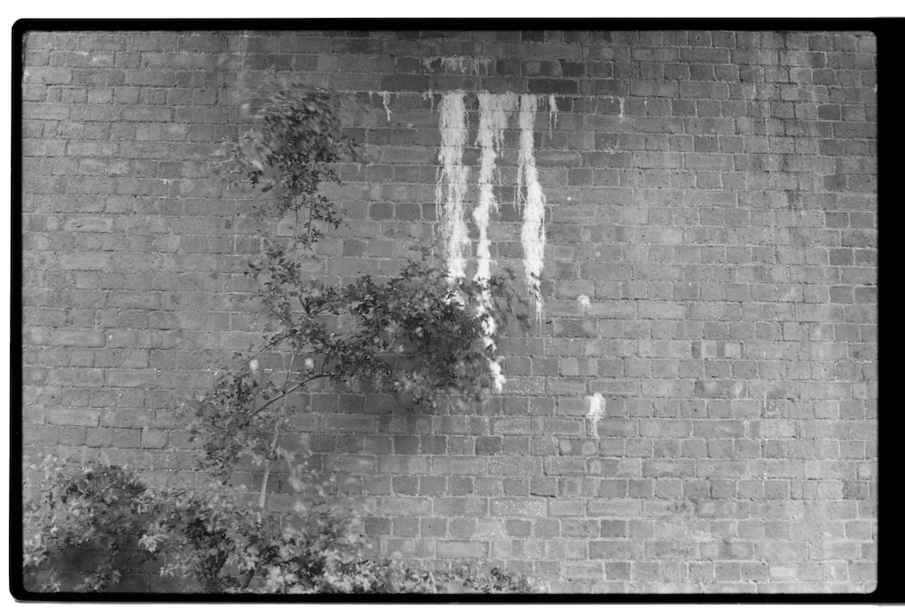
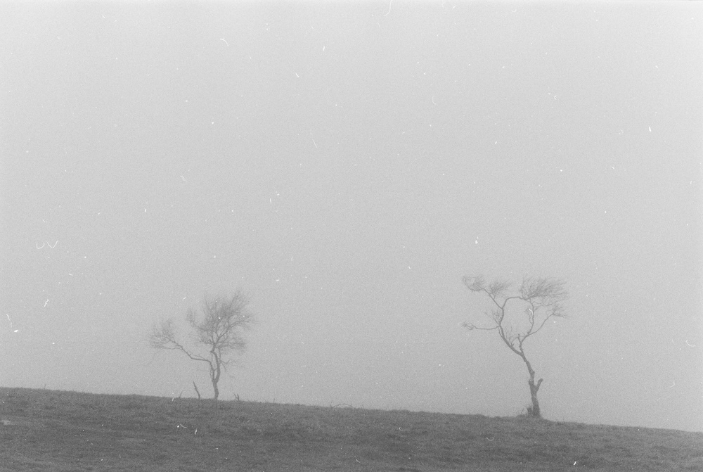
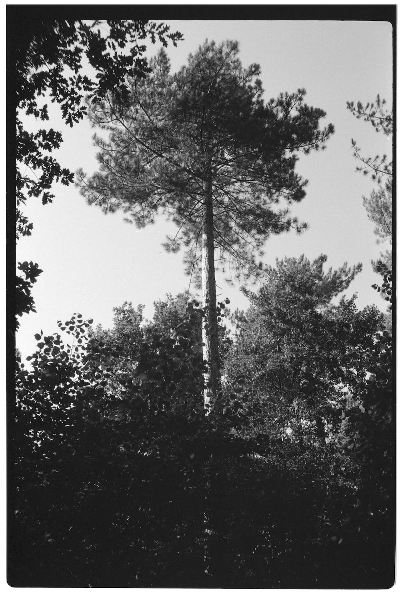
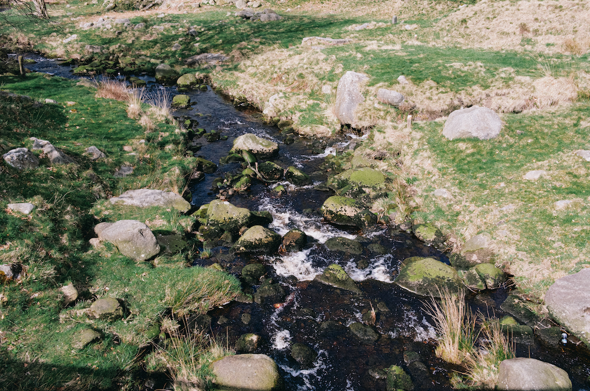

Places in Perspective
Putting something you've made out into the world can be a terrifying idea - akin to posting an entry from one's teenage diary onto Twitter, a digital billboard that proudly advertises some abstracted tender part of yourself and asks "What does everyone think of this?". But for a long time I struggled with this; not only was that thought a cripplingly embarrassing prospect, creativity itself felt like grasping at something ephemeral in the dark, a strange dream from which you wake immediately before coming to some revelation. You have to know what you're looking for first, really.
For a significant chunk of my early 20s, before I dared to publicly refer to myself as a musician, photography was the first and only true creative outlet I'd given myself since I was a child with a folder full of Pokémon drawings. Despite having been a hobbyist guitar player for roughly 7 years at that point, my aspirations had never quite gone beyond learning Black Sabbath riffs in my bedroom; I hadn't tried writing or recording, and I hadn't played in a band since I was too much of a beginner for it to sound any good. It would take a global health emergency for me to actually find the time and headspace to begin making music proper. It was always this 'nice idea' in the back of my head, something I'd surely get around to someday.
Let me paint you a picture for a moment. It's January 2018, about half a year since graduating from university and returning to my home town in the West Midlands of England. Winter is a typically miserable grey, and I've just lost my job at my home town's local record shop, which I would later discover was just the foreshock of the entire company liquidating. I'm back to being a listless 21-year-old with a Psychology degree and little else, living out of his mum's house. In between job-hunting days I'd spend time visiting friends in more happening cities than mine - Birmingham, Nottingham, Leeds - not especially glamorous places in hindsight, but a lot more characterful than where I was living at the time.
It's an especially dismal winter's day and I'm on the train up to Nottingham; the friend I'm due to meet texts me to ask to meet him at a photo studio near the train station, as he's got some printing to get done there. I don't know exactly what that entails, but he says I'm welcome to come and sit in while he finishes up. A short walk from the old red brick station in the south end of the town centre is a nondescript office building, the top floor of which I've been told is our meeting place. It's the kind of building you see a lot in England; the same sterile white walls, strangely-textured blue carpet, potential asbestos lining the insides of the walls. There's a chalkboard sign outside for 'The Photo Parlour'.
This studio occupies the top floor of the building, uncoated wooden floorboards and pasty white walls populated sparsely with framed prints of black and white landscape imagery greet me at the entrance, as does a smiley, tattooed gentleman who sits me down with a warm mug of tea while my friend is busy to-ing and fro-ing from the darkroom, checking each printing result against the last. Nursing the warm mug I peruse the shelves stacked with thick photo books in varying degrees of tatteredness; I'm seeing names like Ansel Adams, William Eggleston, Matthew Genitempo, Lee Friedlander, Julia Margaret Cameron, John Blakemore. All these names were alien to me then, but as of 2024 a few of them sit lonely in a plastic box at the bottom of a cupboard back in the UK.
A tall fridge with a glass door houses piled up packets of printing paper adorned with silvery still life photos, each with different names scribbled on them, and above the sink my friend is busily developing over are old plastic jugs labelled 'STOP BATH' and 'FIXER' in faded Sharpie ink. A rotating door offers a lightproof entrance, I presumed, into the darkroom; I'd spend a small handful of hot afternoons in there two summers later. The two long skylight windows offer a view of Nottingham's city centre; Industrial Revolution-era lace-making factories converted into student housing, the remains of a sad-looking shopping centre which would be demolished just a few years later, and a blanket of greyscale clouds.
"We're selling off some old stuff, actually" says the tattooed man. Carefully laid out on the table below the photo book shelves are cameras, dusty lenses, other knick-knacks of presumably some specific function or other.
"I'm not a photographer, really" I say. I don't mention my old digicam - originally received for a 10th, 11th, perhaps 12th birthday lying forgotten in a draw somewhere.
"Well, if you're interested, that body and lens is going for 20 quid", gesturing towards the Fujica ST605 and matching Fujinon 50mm f1.4 lens. I don't even know if that's a good deal or not. As a newly-redundant skint 21-year-old, any non-essential purchase feels equally frivolous, but I end up taking it anyway, along with a handful of Ilford HP5 black and white film (in 2018, this stuff was still fairly cheap).
I took this camera everywhere with me; it was with me when I spent a week in Prague with my sister a month later, it accompanied me on every trip away from my home town to these 'big cities' my friends lived in, on countryside ramblings and hikes, and even the following year on my first trip to Japan. I hadn't become so instantly infatuated with something new like this for a very long time, and the first time in a long while I'd felt myself tangibly learning, and improving at, something totally new.
When you start using something like a 40-year-old film camera, nothing ever looks good until you've burned through a few rolls of film first. I still remember destroying my first roll of film while trying to eject it on a tour boat in Prague (I'd forgotten about the camera's film release button), hearing the snap inside the camera and realising my entire first day's worth of photos were gone. I hadn't yet mastered the split-prism focussing mechanism, so half of the photos were blurred, I didn't realise this camera's light meter had a tendency to underestimate the amount of light needed, meaning several of them came out too dark, and I'd spend so long remembering how to adjust this or that dial that I'd miss whatever I was trying to get a shot of. But amongst the blurred, under-exposed and mis-framed monstrosities were some occasional gems. The more time I spent and the more photos I took, I felt a bit of myself coming out into the outside world.
No one saw the countless hours I spent badly playing '80s guitar riffs in my bedroom, and no one has heard my most amateurish early demos, but everyone I knew via social media from 2019 onwards saw me learning how to take photos. I think the understood naïveté of it helped; I had no complex about "being a photographer", I was just someone who liked taking photos of things, and I wanted to show my friends what I'd made. I wasn't overthinking things, I was just going with my gut.
And I kept it up; I learned to develop my own film, I bought a scanner, I started filling my own shelves with photo books, I experimented with colour film, and I even bought a Fujifilm digital system and an ill-fated (it broke, twice) medium format film camera. Years later I've even taken photos for money. This box with a piece of glass stuck to the side of it has been the impetus behind day-long hikes, afternoons spent hunched over the kitchen sink slowly rotating a canister of development chemicals as I feverishly check my stopwatch, and sliding around on the floor in dirty Tokyo live houses trying to get the shot of my friend's band without ruining anyone else's night. It gave me something to put my mind to while I was still whiling away the time living out of my mum's house back in England, and it's even been the reason I've made friends here in Tokyo; almost as important as learning the local language. It sounds ridiculous, but I truly believe that my life would be worse now had I not bought that old camera back in 2018.

Photographers often talk of 'series', projects developed - whether intentionally or not - over long periods of time photographing the same subjects, be it people, places or objects. John Blakemore's still life studies Tulips comprises several years of images, in today's age of instant feedback an unthinkable amount of time, but imagine the intimacy you could develop creating in that way. I should say right now that I don't consider myself as even a mile within the same league as Blakemore, but I found myself developing my own fascinations, my own 'series'. I never considered my home county particularly interesting or characterful, but in these evening walks with my camera I found myself inserting a sort of mystical perspective into the countryside. Spend long enough photographing somewhere and it begins to take on a personality of its own, or perhaps it's better to say one imprints one's own onto it. Making photos is funny like that; perhaps to some people it represents little more than a documentation practice, a record of history, but it can reveal more than you think about one's preferences and perspective, in ways sometimes unexpected. In a way it is, or at least it is for me, an attempt to capture the feeling of a place.
Even now I've mostly moved over to the convenience of digital photography, I still remember fondly the minimalistic and meditative approach of a 35mm film SLR and a roll of Ilford HP5. There's a certain pride in nailing that crisply-focussed, perfectly-balanced composition when the contrast is just how you want it that I still never quite get when using a digital camera. Maybe others enjoy the 'vibes' of film photography - the crusty grain, nostalgic colours, and perceived lack of control - and I'd be lying if I said I don't see some kind of magic in photos taken on film, but it's not the reason I fell in love with the medium. The shift in mindset and workmanlike precision required when taking a photo you're not even going to see for at least a week, and the satisfaction of the finished work, is what I miss when I end up spending time away from it. It's not so much that the item itself has a 'vibe' I like in the photos it creates, it's more that taking these photos in the first place requires such commitment and concentration. Looking back, it was the first time in a while I'd had the pleasure of learning a new craft. And in our fast-moving world where the want of being good at something is often greater than the want of learning itself, allowing yourself to be bad at anything for an extended period of time is in itself an achievement.

Nowadays I'm less ashamed of sharing my creative endeavours (I'm still a bit embarrassed). In 2020, 'thanks' in part to a global health emergency granting me a respite from a mentally exhaustive work schedule, I finally had the free time to indulge in making music, something I'd long considered but simultaneously placed aside as an unachievable fantasy. Perhaps I wouldn't have done, had I not already enjoyed the thrill of sharing my creations with those around me?
Around this time I started releasing music under the alias 'Pale Star', named after the Barn Owl song of the same name as a sort of tribute to the great number of stylistic cues I was taking (i.e. stealing) from them. Sound and vision became increasingly intertwined as my long countryside ramblings became a habitual practice; framing photos of the landscape while listening to work-in-progress demos of ambient guitar in the long summer evenings. This, too, was pure naïveté - and I still remember this as some of the most lucid music-making I've ever been able to do. It's sometimes easier said than done, but this is always the best way to create; forget your audience, or your idea of your audience. This is all about you, and life is too short to make 'art' in service of others' opinions. It's in this process too that one can start to see their practice as a wholistic piece, connected across mediums, rather than siloed off and unconnected. I've been thinking about it a lot, now years removed and sat up on the floor of my small furniture-less Tokyo apartment*. Sometimes it pays to slow down, indulge your curiosity, and play a little. Anyone can learn to do everything, and you don't have to be good at it, either.
• Matthew Genitempo, Jasper
• John Blakemore, Photographs 1915-2010
• Stephen Gill, The Pillar
• Akiko Takizawa, Where We Belong
• Julia Margaret Cameron, Julia Margaret Cameron
• Verði Ijós, Svartmálmur